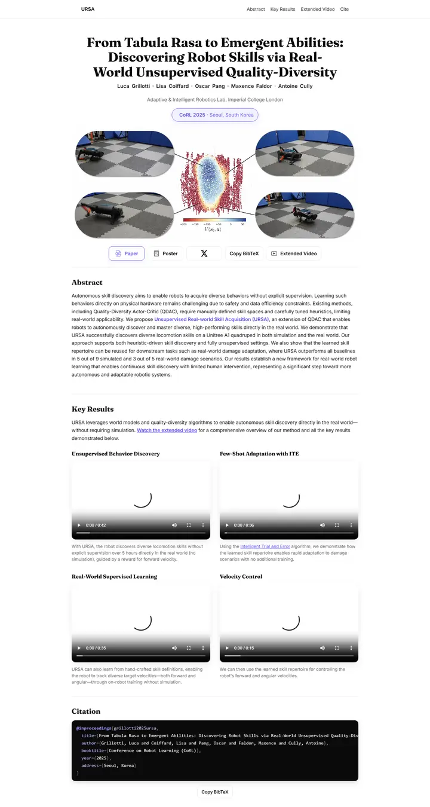

From Tabula Rasa to Emergent Abilities: Discovering Robot Skills via Real-World Unsupervised Quality-Diversity
A quiet journal spread with one violet thread: a Fraunces headline, a lilac pill and a single outlined button pick out the paper while everything else stays ink on white.

Checked against the rendered page. Result videos had not painted a first frame at capture (spinners); described as plain <video controls>.
Why it is here
Deliberate serif display title over a sans body, a pill venue badge, a teaser that blends rounded video frames with a central plot, a tidy button row, and a 2x2 captioned video grid on a calm narrow measure. The most considered typography in the pool. Only flaw is that the video loaders were captured.
Overview
Color Palette
Typography
Fraunces 700
From Tabula Rasa to Emergent Abilities: Discovering Robot Skills via R
Abstract · Method · Results · BibTeX — 0123456789
Inter 400
From Tabula Rasa to Emergent Abilities: Discovering Robot Skills via R
Abstract · Method · Results · BibTeX — 0123456789
Inter 600
From Tabula Rasa to Emergent Abilities: Discovering Robot Skills via R
Abstract · Method · Results · BibTeX — 0123456789
Spacing & Shape
Page Modules
Guidelines
More like this

CRAFT: Training-Free Cascaded Retrieval for Tabular QA
A tidy product manual in pale blueprint blue, where every stage wears its own colored edge.

Efficient Self-Evaluation for Diffusion Language Models via Sequence Regeneration
A tidy stack of rounded cards washed in a blue-violet-apricot dawn, signed with a gradient wordmark.

FIGMA: Towards FIne-Grained Music retrievAl
A music journal on warm paper: a heavy Newsreader headline under a red kicker, big red serif numerals for the results, and figures resting in soft cream frames.

GuideDog: A Real-World Egocentric Multimodal Dataset for Blind and Low-Vision Accessibility-Aware Guidance
A quiet monograph page: one serif column, oxblood ink for the links, and a table that blushes only at its own row.

LaMI: Augmenting Large Language Models via Late Multi-Image Fusion
A careful conference handout: Noto Serif headings, navy outlined buttons and soft grey bands taking turns.

PairCoder++: Pair Programming as a Universal Paradigm for Verified Code-Driven Multimodal and Structured-Artifact Generation
A crisp white product page: a blue announcement strip, ink-black pill buttons and every figure on a soft-shadowed card.